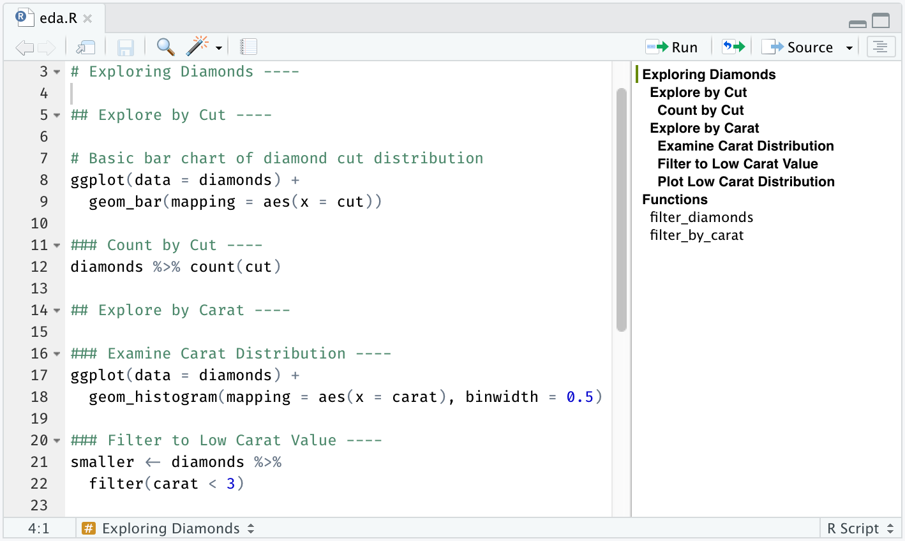
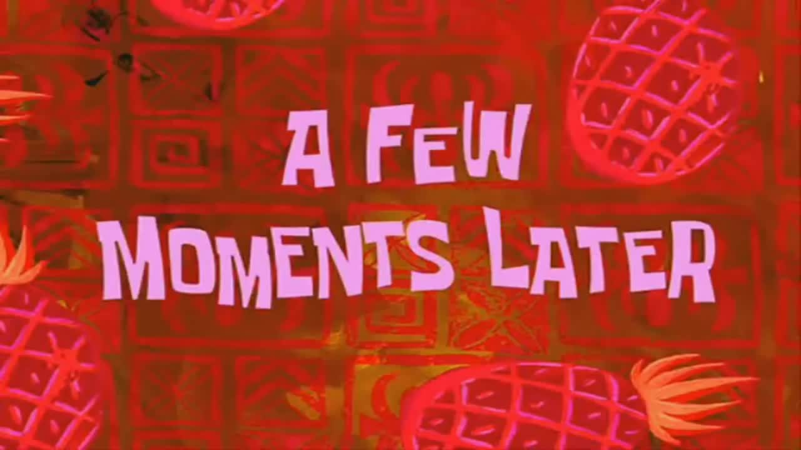

c(25, 30, 22, 40, 35)[1] 25 30 22 40 35Análisis de Datos 1

Cuando trabajamos en R, tenemos diferentes “espacios” o entornos para escribir y ejecutar código:
Retomemos este concepto fundamental:
- Los scripts de R son archivos de texto plano con extensión .R.
- Contienen una serie de comandos de R que se ejecutan en secuencia.
- Son como “recetas” detalladas para realizar un análisis.
- Reutilizables: Podemos volver a ejecutar el mismo análisis fácilmente. -
- Editables: Podemos modificar y mejorar el script.
- Documentados: Podemos agregar comentarios (#) para explicar el código. (un mensaje para tu vos del futuro)

.Rmd o Quarto .ipynb o .qmd) combinan:
Informes: Documentar un análisis de forma clara y reproducible.
Presentaciones: Mostrar análisis interactivos y dinámicos.
Aprendizaje: Experimentar con código y ver los resultados en contexto.
En el cuadrante de Output (abajo a la derecha) tenemos varias pestañas entre ella una que vamos a usar bastante la pestaña help Gracias al trabajo de la comunidad vas a notar que en general la documentación y ayuda de las funciones siempre te dan una descripción, detalles y ejemplos de usos.

En R, todo lo que creamos y manipulamos son objetos. Pensá en ellos como los “ingredientes” que usas en una receta de cocina:
Hoy nos vamos a centrar en Vectores y Data Frames, que son los más fundamentales.
Un vector es una colección ordenada de elementos, todos del mismo tipo. Imagina una columna en una hoja de cálculo.
Ejemplo: Las edades de un grupo de personas encuestadas:
[25, 30, 22, 40, 35]
c()Usamos la función c() (de “combine” o “concatenar”) para crear vectores:
c(25, 30, 22, 40, 35)[1] 25 30 22 40 35Para que podamos guardar y luego “llamar” nuestro vector vamos a necesitar ponerle un nombre. Y para ello en R utilizamos el símbolo <- o también cariñosamente le decimos flechita
De esta manera podemos nombrar nuestro vector edades
edades <- c(25, 14, 22, 40, 35)y luego podemos llamarlo
edades[1] 25 14 22 40 35Y esto es una gran ventaja porque por ej si queremos realizar alguna operación como por ejemplo sumarle un año a todas las edades simplemente haremos lo siguiente
edades+1[1] 26 15 23 41 36Esta característica a en la que la operación se ejecuta sobre cada uno de los elementos del vector se denomina element-wise.
Entonces si realizamos una operación entre dos vectores se ejecutará entre los vectores con misma ubicación. Por ejemplo:
edades*2[1] 50 28 44 80 70edades-5[1] 20 9 17 35 30
¿Dónde están los vectores que creamos?
Probalo en tu consola y tu IDE de R y después volvé a esta presenta

En una “sección” que llamamos “Values”
Ahi también podemos ver una información importante sobre nuestro vector

R nos muestra el nombre del vector (en este caso edades) y el tipo o clase que en este caso es numeric.
Los vectores en R pueden almacenar diferentes tipos de datos:
double): Números con decimales. Ej: c(25, 30.5, 22, 40, 35.8) (edades, ingresos).integer): Números enteros. Ej: c(1, 2, 3, 4, 5) (número de hijos).character): Texto (strings). Ej: c("Juan", "Maria", "Pedro") (nombres, respuestas abiertas).logical): Valores TRUE o FALSE. Ej: c(TRUE, FALSE, TRUE, TRUE) (¿votó en la última elección?).factor): Variables categóricas con niveles definidos. Ej: factor(c("Secundario", "Universitario", "Secundario")) (nivel educativo).Aprovechandon nuestro vector edades Podriamos preguntarle a R la edad de nuestro entrevistado más joven. Para eso vamos a usar la función min()
min(edades)[1] 14Creá tu vector con ingresos de hogares y realizá los siguientes cálculos usando estas funciones de R
´min()´ ´mean()´
¿Qué representá cada una? ¿Qué conclusiones sacarías acerca de esta muestra? Podes usar la ventana de ayuda integrada dentro de R ubicada en el panel inferior
Otro tipo de dato que vamos a usar MUCHISIMO son los de tipo texto
Veamos un ejemplo
provincia <- c("CABA", "Buenos Aires","Buenos Aires","Buenos Aires","Mendoza")
provincia[1] "CABA" "Buenos Aires" "Buenos Aires" "Buenos Aires" "Mendoza" Los strings no necesariamente tienen que contener letras. También pueden tener números almacenados como texto. Por ejemplo:
c("10", "9", "8", "10", "9")[1] "10" "9" "8" "10" "9" TRUE o FALSE.Por ejemplo podriamos querer saber si nuestros entrevistados estan en edad de votar
mayores_de_16 <- edades > 16
mayores_de_16[1] TRUE FALSE TRUE TRUE TRUEVayamos con un clasico de la sociología
niveles_educativos_caracter <- c("Primario","Secundario","Terciario","Universitario")
niveles_educativos_factor <- factor(niveles_educativos_caracter)
niveles_educativos_factor[1] Primario Secundario Terciario Universitario
Levels: Primario Secundario Terciario UniversitarioCon la función factor() nuestro vector deja de ser un simple conjunto de textos sueltos y pasa a ser si quisieramos saber todos los niveles de nuetra variable categórica podemos usar la funcion levels()
levels(niveles_educativos_factor)[1] "Primario" "Secundario" "Terciario" "Universitario"Si miras el Global enbviroment ¿qué diferencias encontras entre los vectores niveles_educativos_caracter y niveles_educativos_factor?
Un data frame es la estructura de datos más importante en R para análisis sociológico.
Podemos crear data frames con la función data.frame() a partir de estos vectores:
Supongamos que tenemos tres vectores chacarcter, otro numerico y otro factorial
nombres <- c("Ana", "Pedro", "Maria", "Juan", "Sofia")
edades <- c(25, 30, 22, 40, 35)
nivel_edu <- factor(c("Universitario", "Secundario", "Universitario", "Terciario", "Secundario"))Usando data.frame() Nombramos a cada una de las variables indicando el nombre es la columna = nombre_del_vector
sociodata <- data.frame(
nombre = nombres,
edad = edades,
educacion = nivel_edu)
sociodata| nombre | edad | educacion |
|---|---|---|
| Ana | 25 | Universitario |
| Pedro | 30 | Secundario |
| Maria | 22 | Universitario |
| Juan | 40 | Terciario |
| Sofia | 35 | Secundario |
En el “universo tidyverse” (que usaremos mucho), trabajamos con data frames “tidy” o “ordenados”:
¡Esta estructura facilita mucho el análisis y la manipulación de datos!

Podemos acceder a partes específicas de un data frame usando corchetes [] o el símbolo $ (también le decimos “pesitos”):
Traer el caso en la Primera fila, segunda columna:
sociodata[1, 2][1] 25Traer toda la primera fila:
sociodata[1, ]| nombre | edad | educacion |
|---|---|---|
| Ana | 25 | Universitario |
Traer toda la segunda columna:
sociodata[, 2][1] 25 30 22 40 35$):Columna “educacion” completa:
sociodata$educacion[1] Universitario Secundario Universitario Terciario Secundario
Levels: Secundario Terciario UniversitarioPrimer elemento de la columna “nombre”:
sociodata$nombre[1][1] "Ana"Los operadores son símbolos especiales que indican a R qué tipo de acción o cálculo debe realizar. Son como los “verbos” en el lenguaje de R.
Tenemos diferentes tipos de operadores:
<-!).+ Suma- Resta* Multiplicación/ División^ PotenciaPor ejemplo:
edades <- c(25, 30, 22, 40, 35)
# Sumar 5 años a todas las edades:
edades + 5[1] 30 35 27 45 40# Calcular el doble de cada edad:
edades * 2[1] 50 60 44 80 70> Mayor que< Menor que>= Mayor o igual que<= Menor o igual que== Igual a (¡ojo, dos iguales!)!= No igual a (distinto de)Ejemplos con vectores:
edades <- c(25, 30, 22, 40, 35)
# ¿Qué edades son mayores de 30?
edades > 30[1] FALSE FALSE FALSE TRUE TRUEniveles_educativos <- c("Secundario", "Universitario", "Primario", "Universitario", "Terciario")
# ¿Qué niveles educativos son "Universitario"?
niveles_educativos == "Universitario"[1] FALSE TRUE FALSE TRUE FALSE<- (Asignación “flechita”): Asigna el valor de la derecha al objeto de la izquierda. ¡Es el más común y recomendado!
mi_variable <- 10
nombre_data_frame <- sociodata= (Asignación “igual”): También asigna valores. Funciona similar a <-, pero en algunos contextos puede ser menos claro.
otra_variable = 20-> (Asignación “flecha derecha”): Asigna el valor de la izquierda al objeto de la derecha. Menos común, menos legible.
"Hola R" -> mensajeEn este curso, usaremos principalmente <- para asignaciones. ¡Es una buena práctica mantener la consistencia!
Hoy aprendimos sobre:
¡Con estos conocimientos, ya puedes empezar a crear y manipular datos en R! En la próxima clase, ¡vamos a importar datos reales y poner en práctica todo esto!
En la próxima clase, aprenderemos a: